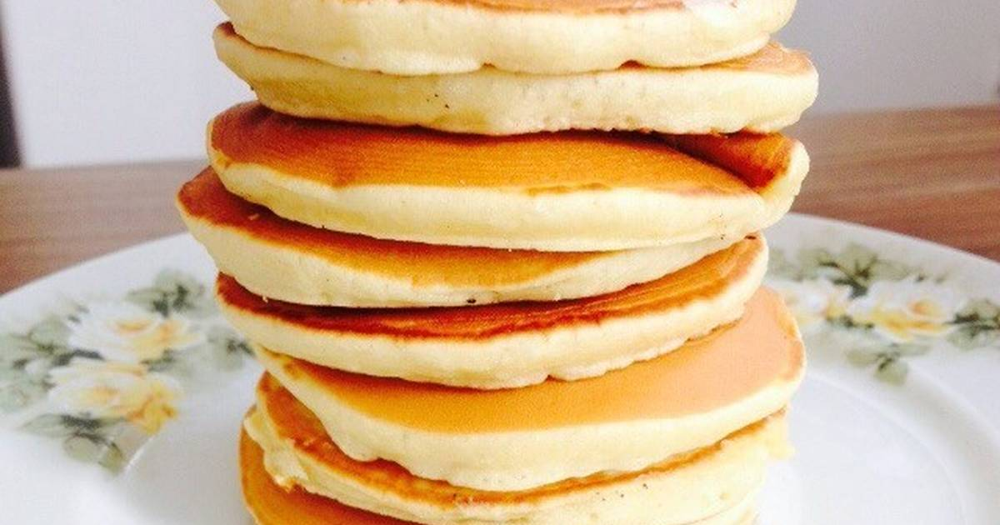

Panqueca Americana

Descrição:
Confira essa receita de panqueca americana deliciosa! Uma das comidas mais comuns no breakfast, o café da manhã dos
Estados Unidos, ela é muito versátil e vai te proporcionar uma refeição muito especial!
Ingredientes:
- 1 e 1/4 xícara (chá) de farinha de trigo
- 3 colheres (chá) de fermento em pó
- 1 xícara (chá) de leite
- Pitada de sal
- 1 colher (sopa) de açúcar
- 2 ovos levemente batidos
- 2 colheres (sopa) de manteiga derretida
- Óleo
Passos:
- Misture em um recipiente: a farinha, o açúcar, o fermento e o sal.
- Em outro recipiente, misture os ovos, o leite e a manteiga.
- Acrescente os líquidos aos secos, sem misturar em excesso.
- O ponto da massa não deve ser muito líquido, deve escorrer lentamente.
- Aqueça e unte a frigideira com óleo, coloque a massa no centro, cerca de 1/4 xícara por panqueca.
- Vire a massa para assar do outro lado e está pronto!